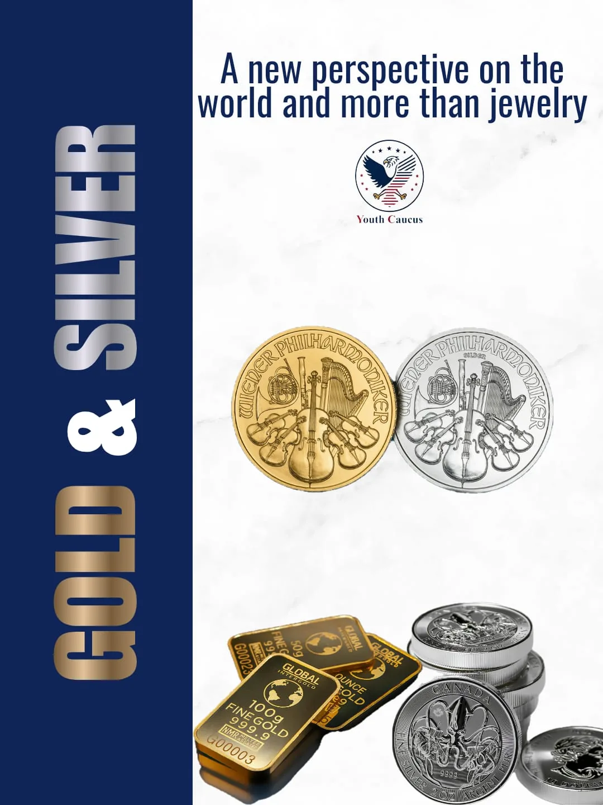

January 6, 2026
Gold and Silver - A New View of the World and More Than Jewelry

“Buy silver!” — a short sentence I first heard in January 2024, spoken by Robert Kiyosaki, the author of the famous book *Rich Dad Poor Dad*. In that work, the author does not devote a detailed analysis to silver, but it is mentioned, and through the knowledge gained by reading that book, as well as *Cashflow Quadrant* and *The Intelligent Investor*, Kiyosaki points to the weaknesses of the modern monetary system, the lack of financial education and literacy, and the absence of an adequate understanding of money and finance. He also emphasizes the necessity of financial education at an early age—education he himself received through his “rich dad,” the father of his friend. However, not everyone has a rich dad, nor do their friends.
The greatest wealth of Robert Kiyosaki’s rich dad was a long-term vision, adherence to practical laws he observed in his businesses, an understanding of the essence of money, discipline in following a plan, and sales skills. Kiyosaki points out that the business principles of the rich dad are something that should be brought closer to young people through educational institutions, and through various channels also to older generations who were denied this during their schooling. Through his books, the board game *Cashflow*, and the *Rich Dad Radio Show* podcast, Kiyosaki fills part of that gap, but it remains far too large to be fully filled by individuals, even those as successful as Kiyosaki himself.
The United States set a global standard in bringing financial literacy closer to its citizens. Although the American model can sometimes be found among Kiyosaki’s criticisms—primarily because of the 401(k) retirement fund—the fact is that this very model developed awareness of the necessity of adequate and practical financial education and literacy. As a result, millions of young Americans, as well as older ones, have their own investment portfolios, which do not have to exceed a few thousand dollars, especially when it comes to young people. Young people in America recognize the power of sound and recognizable investments, as well as the profitability of a long-term strategy of regular saving and investing.
Investing or saving in gold and silver, at least at the beginning of 2024, was a great way for young people around the world to encounter a new view of the world and of finances—one that goes beyond accepting a monthly inflow of money, which we call a salary, as the only stable, real, and sustainable option. Among others, Kiyosaki’s father held such a view; after being laid off from a stable and well-paid job, he had to work in his later years simply to survive.
At the beginning of 2024, the price of an ounce of silver (about 30 grams) was around 25 dollars, and the price of an ounce of gold around 2,000 dollars. At the time of writing this text, on January 6, 2026, the price of an ounce of silver is around 77 dollars, and the price of an ounce of gold around 4,443 dollars. At the beginning of 2024, a large number of young people in Serbia could have bought one ounce of silver instead of one evening out or several coffees at a café, at a cost of no more than 3,500 RSD (due to VAT). Those who were employed might have been able to save that amount every month and store it precisely in one or more ounces of silver, depending on their monthly inflows and outflows. As the price of silver rose, they would likely have continued with these habits.
However, a question arises for young people: how could they have known that it is even possible to buy physical gold and silver and store it, or even invest in investment funds whose assets are gold and silver?
Another question—perhaps logically the first—is: why do this at all?
Let us start with that “first” one. Silver, unlike gold, is far more of an industrial metal. Silver is one of the most important materials in the production of solar panels, mobile devices, weapons, and batteries (electric vehicles). The list goes on.
Gold, on the other hand, has always had an attributed civilizational value and a note of wealth. For a long time, throughout the development of humanity, it shaped financial relations between countries and the development of the financial system. As backing for money (the dollar, the euro, etc.), it preserved the value of the dollar until Nixon abolished the direct convertibility of the dollar into gold in 1971. Paper money then gained the ability to expand in unlimited quantities, which we clearly witness in the 21st century. One of Robert Kiyosaki’s frequent phrases is precisely that “when bad money comes to the surface, good money goes into hiding.” Without gold backing, paper and electronic money flooded the monetary system, and total global debt amounts to 310% of global gross domestic product.
In order to stabilize national economies, governments will have to find ways to continue functioning as safely and painlessly as possible in a world in which we almost daily witness moves that indicate it is changing rapidly. Gold certainly did not wait for governments, nor did people who have always recognized its value.
Taking into account the industrial potential of silver, people have also attributed to it a perception similar to that of gold, though to a lesser extent. However, the false signals sent by JPMorgan regarding silver—signals that cost them lawsuits totaling one billion dollars—indicate that the real value of silver may be significantly higher, which has certainly proven to be a correct standpoint over the past two years.
That it will be difficult for the world to find alternatives, and that the value of gold and silver will very likely continue to rise, is believed and confirmed by many global analysts.
Thus, we have our answer to why this should be done. The second question is probably even more important for young people in our region. Until a few years ago, I would have asked the same question. In a very large number of conversations with my peers from Serbia, I noticed that many were not familiar with the true value of gold and silver, nor with investing in general. However, to say that they are not interested in learning about that system would be a lie. The only difference I made a few years ago was that I picked up books on these topics, which certainly does not make me an expert, but it resulted in what I describe in this text: the opening of a new world—the world of healthy financial planning, independence, and long-term investing. On the other hand, my peers from South Carolina, USA, introduced me last year to their investments, which have been active for several years. For them, this was nothing out of the ordinary, just part of the everyday life they are used to.
That single ounce and following the growth of silver pushed me to better understand what precedes it and to learn more about it, which has become a way of looking at other investments as well. It helped me to invest money strategically in my own business, precisely because of a long-term perspective.
During my high school years, the only conversations that included gold and silver were about jewelry—chains and the like. In the most watched media, one could not hear much about the investment value or the value of saving in gold and silver, nor does the social media algorithm “favor” such topics—unless you force it to, which is the sole purpose of this text.
Research, read, and think critically. Start by researching silver and gold, the physical purchase of them, and investing in funds, because it may be easier to understand silver and gold than investing in other types of assets. Over time, you will become familiar with diversification and what it actually entails. You will build a way of perceiving and understanding everyday life that will lead you to good and thoughtful decisions—and, most importantly, to a greater number of them. If it makes it easier for you, gold and silver continue to be part of my portfolio. Still, remember the following:
As of this year, China has drastically limited the export of silver.
Venezuela is among the thirty countries in the world with the largest gold reserves.
The value of gold and silver reacts to global (in)stability.
Countries around the world are racing to increase their gold reserves and to store them safely, efficiently, and securely—something that should also be paid attention to in Serbia, considering that we buy our gold, from the territory of the Republic of Serbia, from the Chinese company Zijin.
The world continues to circulate through changes that have proven to be the only constant. Nevertheless, gold and silver have preserved their value for thousands of years. The best day to invest was yesterday. The second-best day is today.
On our website, you will soon find recommendations for a large number of books, documentaries, and shows about gold, silver, and other financial aspects, and we conclude this text with the very book we began with. If you have not already, read Rich Dad Poor Dad. If you have, ask yourself whether you respect and apply some of the principles from that book.
The content of this text should not be understood as financial advice, nor can it be. Financial decisions should be made independently or with licensed professionals.